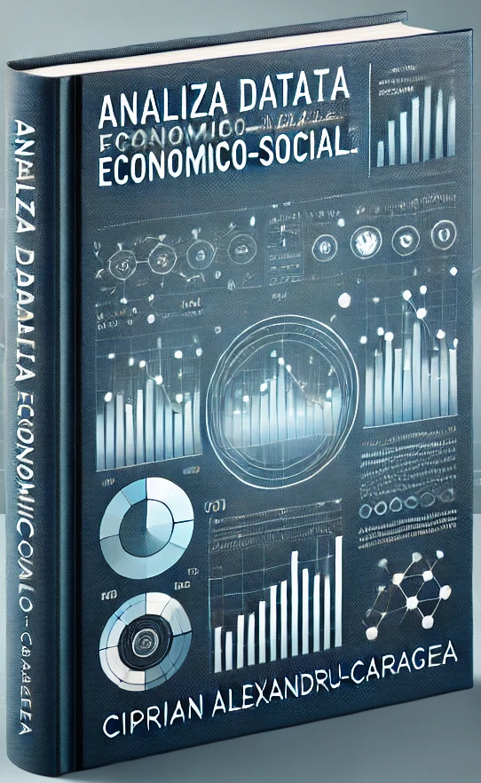

Analiza datelor economico-sociale
cu aplicații și exemple în R, Python, Excel și PowerBI
Despre autor

Ciprian Alexandru-Caragea este conferenţiar universitar la Facultatea de Management Financiar, Universitatea Ecologică din București și Analist de Date la diverse instituții internaționale.
Titlul de doctor în Economie l-a obţinut sub egida Academiei Române, Institutul de Economie Naţională.
A participat la un program de studii postdoctorale în care a implementat utilizarea software-ului R ca instrument de analiză a evoluției indicilor bursieri.
Activitatea sa didactică se concentrează, în principal, în domeniul burselor de valori, prin cursuri și seminarii la programele de licență și masterat (Piețe de capital, Managementul Portofoliului, Piețe internaționale de capital).
A participat la diverse proiecte de cercetare, workshop-uri, conferințe naționale și internaționale. Activitatea de cercetare a fost pusă în valoare prin publicarea studiilor în reviste din țară și din Europa, precum și în baze de date internaționale recunoscute (RePEC, DOAJ, EBSCO).
În prezent, în cadrul Institului Național de Statistică, participă ca expert în proiecte BigData și utilizează software-ul de analiză statistică R pentru Data cleaning, Data Matching, Web Scraping, analize de date și vizualizare, Data mining, Data integration, data processing, data validation, dar și utilizarea datelor din sursele administrative pentru realizarea de statistici oficiale.
ResearcherID: V-2168-2017
https://orcid.org/0000-0001-8215-6671